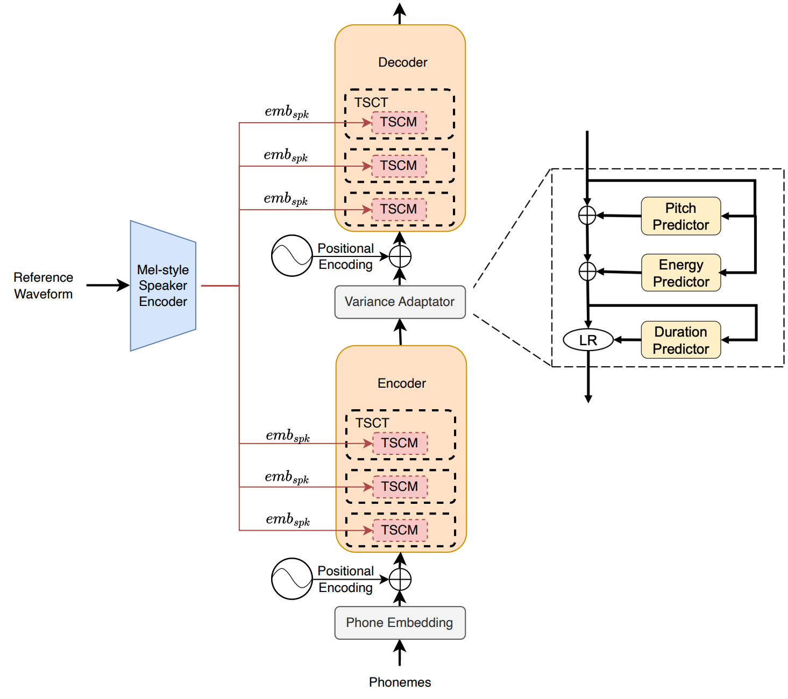

Optimizing Feature Fusion for Improved Few-Shot Speaker Adaptation in
Text-to-Speech Synthesis
Zhiyong Chen*, Zhiqi Ai*, Youxuan Ma, Xinnuo Li, Shugong Xu**
*These authors contributed equally to this work, **Correspondence:
Shugong@shu.edu.cn
Abstract
In the era of advanced Text-to-Speech (TTS) systems capable of generating high-fidelity, human-like speech, voice cloning (VC) stands out as an important subtask. A primary challenge in VC is maintaining speech quality and speaker similarity with limited training data for a specific speaker. Existing VC systems often rely on basic combinations of embedded speaker vectors, leading to suboptimal performance. To overcome this, we introduce the Two-branch Speaker Control Module (TSCM), an innovative voice cloning module engineered to precisely capture the speaker identity of a target speaker. Our method uses an advanced fusion of local-level features from a Gated Convolutional Network (GCN) and utterance-level features from a Gated Recurrent Unit (GRU) to enhance speaker control. We demonstrate the effectiveness of TSCM by integrating it into state-of-the-art TTS systems like FastSpeech 2 and VITS, significantly optimizing their performance. Experimental results show that TSCM based TTS (TSCM-TTS) facilitates accurate voice customization for a target speaker with minimal data and minimizes computational resources through few-shot fine-tuning of pre-trained multi-speaker models. Furthermore, TSCM-TTS demonstrates superior performance in zero-shot scenarios compared to baseline and state-of-the-art systems. Both subjective and objective evaluations confirm the superiority of our system over existing methodologies.
Overall Pipeline



(a) The details of the TSCM block are shown in the figure, where the
![]() is used for constraining the hidden-state by introducing both the recurrent and a convolution branch. The addition and multiplication operations are represented by
⨁ and
⨂ respectively.
is used for constraining the hidden-state by introducing both the recurrent and a convolution branch. The addition and multiplication operations are represented by
⨁ and
⨂ respectively.
is used for constraining the hidden-state by introducing both the recurrent and a convolution branch. The addition and multiplication operations are represented by
⨁ and
⨂ respectively.
(b) Integration of our TSCM method into the FastSpeech 2 architecture.
The TSCM-TTS system utilizes a mel-style encoder to extract the latent speaker vector from the
reference mel spectrogram of the target speaker, and the TSCM-Transformer (TSCT) serving as an
advanced control for speaker identity.
(c) Overview of our proposed TSCM-VITS system in training procedure.
Demo
1. Voice Cloning
| Sample A | Sample B | Sample C | |
| Utterance for enroll | |||
| Target Text | He hears a rushing sound like that of the paddles of a distant steamer striking and tearing the water; he sees the terns flocking, and the surface of the water broken again and again by bleak leaping high into the air. | So he turned his horse round, and brought the false bride back to her home, and said, 'This is not the right bride; let the other sister try and put on the slipper.' Then she went into the room and got her foot into the shoe, all but the heel, which was too large. | It is not like a single large animal darting forward with rapidly twisting tail, and leaving a wake and waves behind it; but a general effervescence that makes the depths gleam with millions of scales. |
| GT(Read by real speaker) | |||
| YourTTS_Control-ZS(baseline) | |||
| YourTTS_Control-FS(baseline) | |||
| TSCM-VITS-ZS(ours) | |||
| TSCM-VITS-FS(ours) |
2. Performance Comparative Metrics of Our Proposed Method with SOTA VC Models
(Zero-shot)
| Sample A | Sample B | Sample C | |
| Utterance for enroll | |||
| Target Text | He hears a rushing sound like that of the paddles of a distant steamer striking and tearing the water; he sees the terns flocking, and the surface of the water broken again and again by bleak leaping high into the air. | So he turned his horse round, and brought the false bride back to her home, and said, 'This is not the right bride; let the other sister try and put on the slipper.' Then she went into the room and got her foot into the shoe, all but the heel, which was too large. | It is not like a single large animal darting forward with rapidly twisting tail, and leaving a wake and waves behind it; but a general effervescence that makes the depths gleam with millions of scales. |
| VALLEX | |||
| XTTS | |||
| TSCM-VITS(ours) |